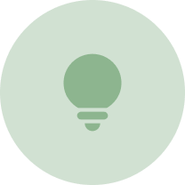

.png)
UW Blueprint x SDC
Streamlining registration process for volunteers and participants
Organization
University of Waterloo Blueprint
Role
2 designers (me), 1 PM, 1 PL, 6 developers
Timeline
May - Aug 2021
Tools
Figma
Background
UWBP
UWaterloo Blueprint (UWBP) is a student-led team dedicated to building digital services for non-profit organizations relating to social good.
SDC
The Social Diversity for Children Foundation (SDC) organizes and hosts programs to empower children with disabilities. The organization’s objective is to 1) encourage parents to sign up for SDC programs so participants can register and to 2) reduce friction between volunteer coordination of classes and class times. The current portal is hosted through Acuity.
Goals
Minimize friction from parents to sign up for SDC programs so that more participants can register
Ease volunteer and program coordinator management of classes and times
Target Users
User Flow
Assumptions
Assume that a simplified registration flow will directly correlate with an increased number of SDC program registration.
Assume that the internal administration portal only need to support less than five users concurrently.
Assume the cloud service hosting platform connection with pre-existing SDC information (stored in Google Drive, Dropbox, actual paper) is secure.
Decision 1
Save account information
Currently, users have to repeatedly input information every time they register since nothing is saved to an account.

Decision 2
Prioritize ease of use and security of confidential information
Majority of parents using the SDC portal are not 100% comfortable with technology and/or inputting personal information online. This decision is aimed towards building trust and comfort with the user.

Decision 3
Scalability
At some point, the entire portal would be handed over to the client, so it was crucial to create a system that was easily scalable and maintainable by the SDC team. This meant resorting to classic flows and conventional experiences.

Decision 4
Provide ability to switch languages
Acuity and Google Forms only support English; however, English speakers only consist of 10% of the participants and their families (50% Chinese; 20% Korean; 10% Japanese)

Decision 5
Responsiveness
Acuity and Google Forms are poorly optimized for mobile devices. However, most of the parents of participants access the platform through their mobile devices (not computers).

User Testing
The parents who volunteered to help with usability testing were not comfortable with video calling or screen sharing, so we decided to use Maze instead. Maze allows designers to create and send out usability tests that can be completed remotely.

Next Steps
Build out the internal facing portal
The first half of the project was dedicated to building the external facing portal, where parents and volunteers go to register for programs. The second half will be dedicated to designing the experience of setting up, hosting, and maintaining programs.
Reflections
Ask for feedback often and early
This includes both the client, users, developers, and other designers. Just ask everyone!

Constraints open up opportunities to think outside the box
What do you do if your users prefer not to call for interviews and don't speak English? How many features do you design for to preserve scalability and consider time constraints? These were some questions we had to ask ourselves during this project that really forced us to think for alternative solutions.
Align design decisions with business goals
Training myself to always consider business and product goals while designing. One question to keep in mind is: "How does my design help users achieve their goals?"